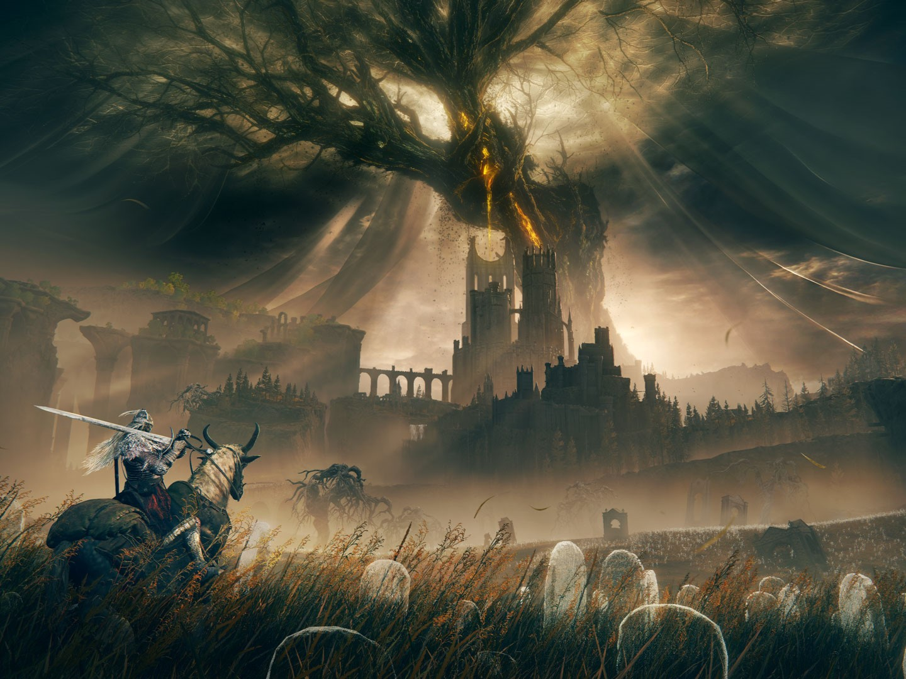
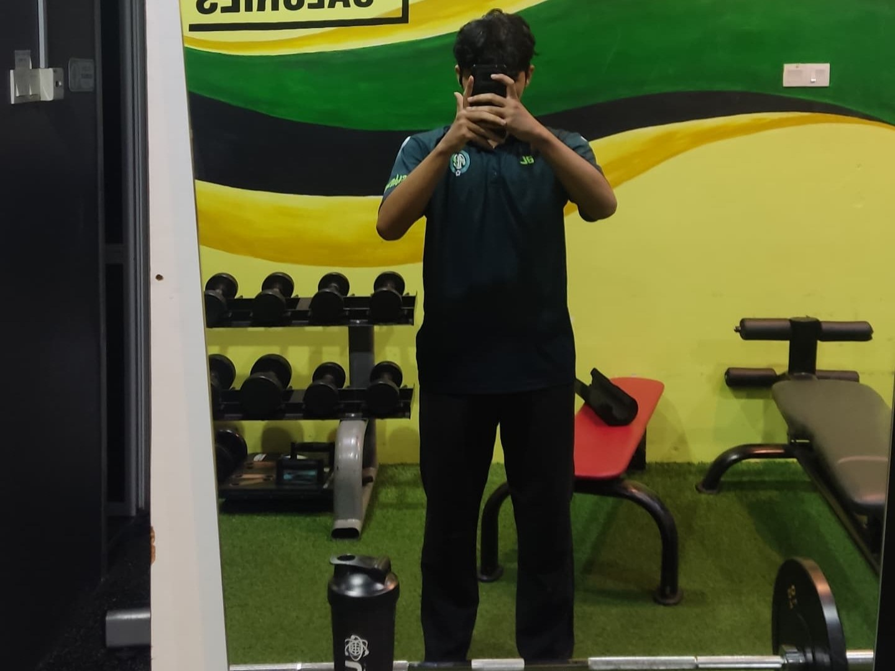
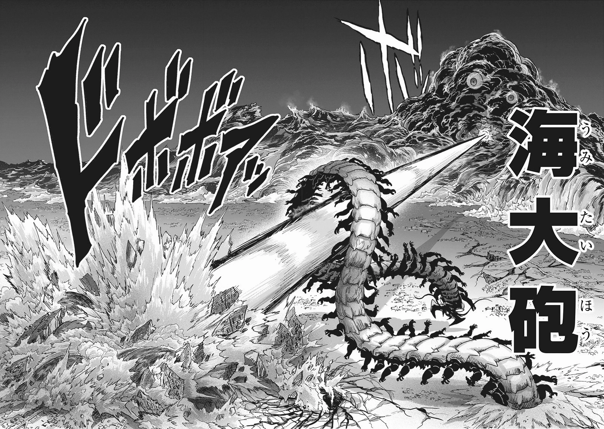

ABOUT ME
Hi, my name is Muhammad Faries Hafiz Bin Hidayatullah. My home is at Darul Ehsan, Kajang, Selangor. I grew up mostly in Kajang. After being born at a hospital in Parit Buntar Perak. Really, other from Kajang, there is no recollection of growing up and I think my consciousness first appeared when I was four years old, in 2007.
| NAME: Muhammad Faries Hafiz Bin Hidayatullah | AGE: 21 |
| DATE OF BIRTH: 18 May 2003 | BIRTHPLACE: Hospital Parit Buntar, Perak |
| STATE: Kajang, Selangor | PHONE NO: 016 - 4965541 |
| EMAIL: muhammadfarieshafiz@gmail.com |
| MY HOBBIES | ||
|---|---|---|
|  |  |  |
| VIDEO GAME | WORK OUT | FICTION BOOK |
| One of my favourite video game is Elden Ring and Dota 2. Fun fact, Elden Ring won the Game of the Year for 2022 and rated almost max score from most journalist and media in gaming industry I usually play wherever I have times but right now I need to stop and focus on my study | I go to gym 4 times in a week during empty schedule or when I'm not busy. It feels so satisfying when I'am able to push my self and achive new personal record meaning that there is progress and not meaningless | Compare to playing video game and gym, reading manga or novel to me are much lighter activites which doesn't exhaust my energy whether mentally or physically |